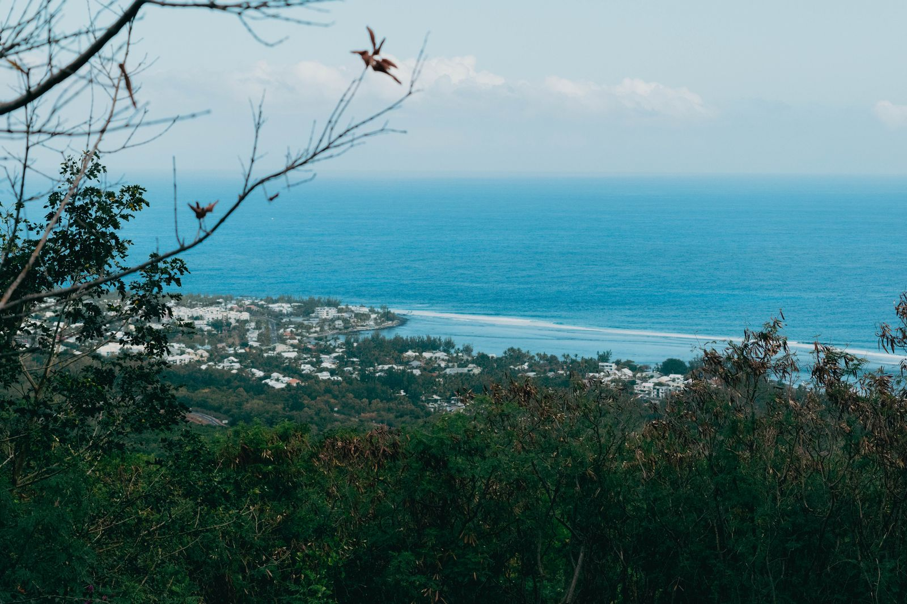

On ne tombe pas amoureux de la même façon à La Réunion qu'ailleurs. Ici, une rencontre n'engage jamais deux personnes seulement : elle engage deux histoires, deux familles, tout un art de vivre.
À Cupidon, cela fait depuis 2017 que nous accompagnons des célibataires de toute l'île. Et s'il y a une chose que nous avons apprise, c'est que l'amour péi a sa propre saveur. En voici les ingrédients.
Une île métissée, des cœurs ouverts
La Réunion, c'est le brassage de tout un monde : cultures malbar, kaf, zarab, chinoise, yab, européenne… Cette diversité ne se contente pas de cohabiter, elle se mélange. On grandit habitué à la différence, curieux de l'autre. Résultat : les Réunionnais abordent souvent la rencontre avec une ouverture d'esprit rare, sans les préjugés qui compliquent tout ailleurs.
La famille n'est jamais loin
Sur l'île, présenter quelqu'un « à la famille » reste un moment fort. Le dimanche autour d'un cari, les cousins, les marmailles : une relation sérieuse s'inscrit vite dans ce cercle chaleureux. C'est exigeant, mais c'est aussi une chance — on ne construit pas dans le vide, on construit entouré.
Un territoire petit… et grand à la fois
La Réunion tient sur quelques dizaines de kilomètres, et pourtant tout le monde ne se croise pas. Entre le Nord et le Sud, les Hauts et le littoral, les cercles restent souvent cloisonnés. Beaucoup de célibataires ont l'impression d'avoir « fait le tour » de leur entourage. C'est justement là qu'une agence prend tout son sens : élargir le cercle, avec discrétion, au-delà des connaissances communes.
Le kréol du cœur
Il y a enfin cette douceur créole, cette façon de prendre le temps, de rire, de vivre au rythme de l'île. L'amour ici n'aime pas la précipitation. Il aime les vraies conversations, les gestes sincères, la patience. C'est exactement l'esprit dans lequel nous travaillons : pas de swipe, pas de course — des rencontres préparées, humaines, qui ont une chance de durer.
Prêt(e) à faire une vraie rencontre ?
Un premier appel découverte, gratuit et sans engagement, pour faire connaissance.
Réserver mon appel découverte